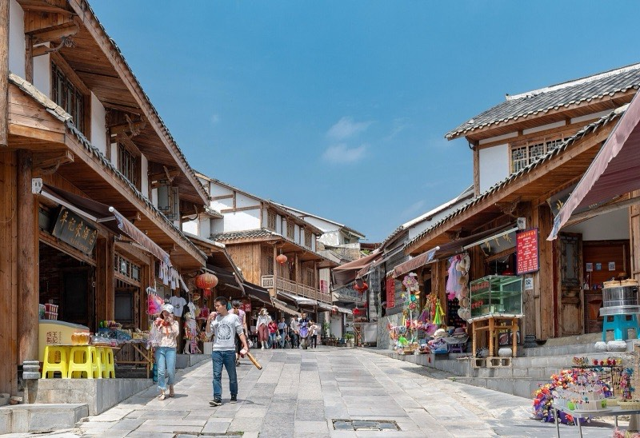
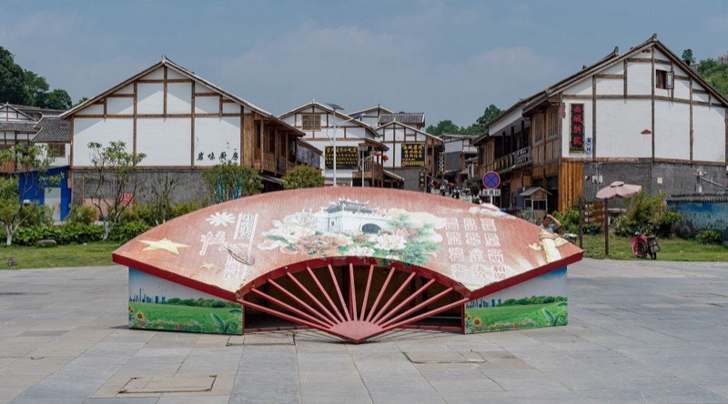
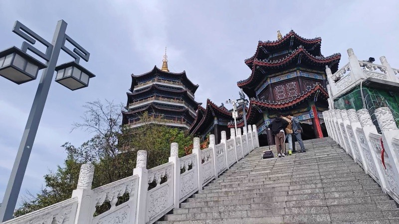
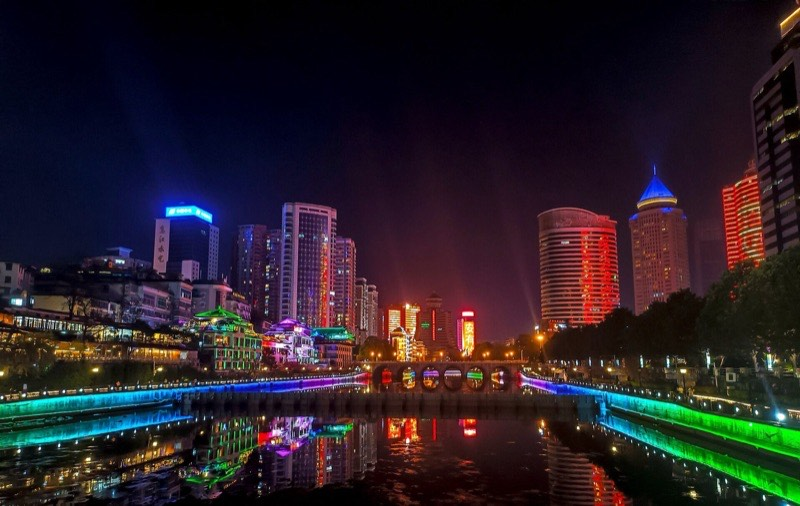
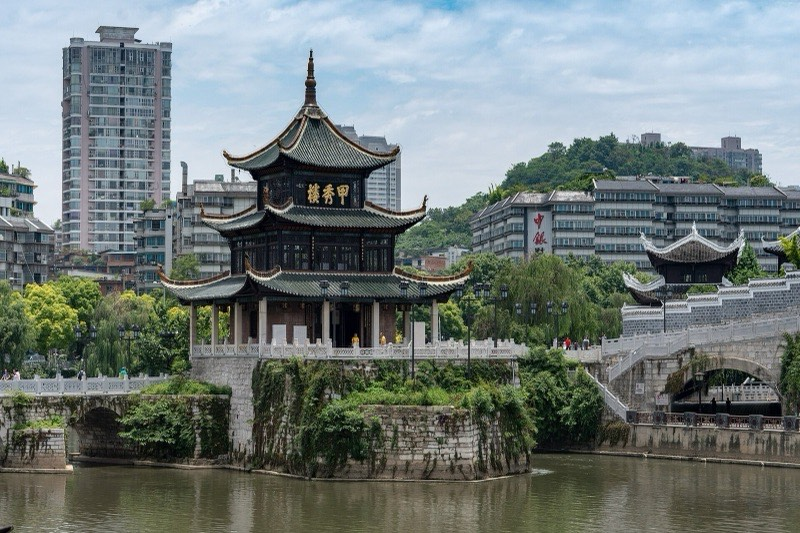
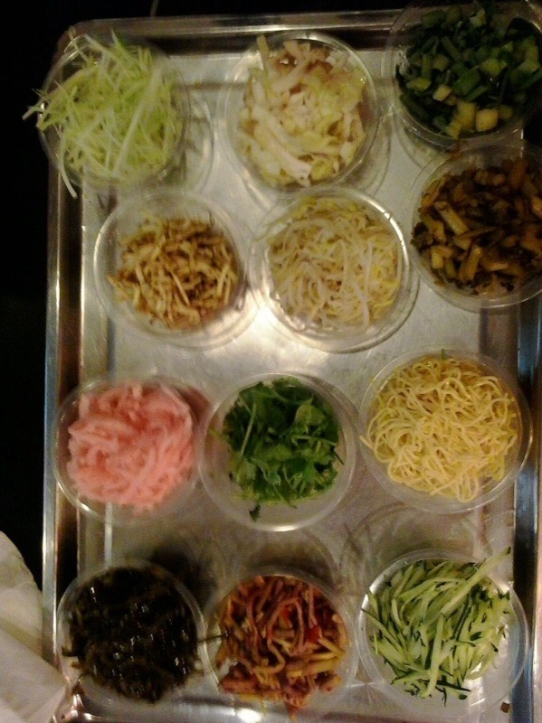
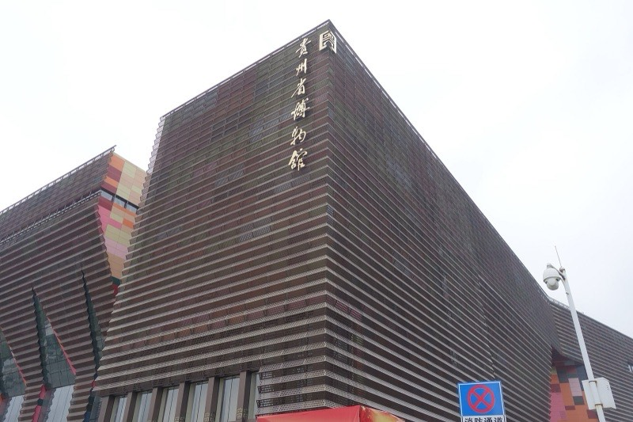

怎么排
周五晚上到得晚，第一晚只入住休息，实际能玩的是周六一整天和周日 18:00 之前。这一版把一份流传很广的「贵阳 3 天 2 晚」攻略里的十几个点，和原来的安排合成了两天，按地理顺序排，不走回头路：周六先跑南边的青岩古镇和夜郎谷，下午回城北上黔灵山，傍晚东山寺看日落，晚上在老城看甲秀楼夜景、逛青云市集，最后去双子塔；周日上午在观山湖连看地质博物馆、省博物馆和观山湖公园，下午回到喷水池一带，民生路、文昌阁、天主堂都能走路串起来，18:00 从酒店去贵阳北站。
路线图
10/23 周五 · 晚上到达
机场 / 高铁站 → 喷水池（入住）
- 晚上到达贵阳，打车或地铁进市区，入住喷水池 / 大十字一带
- 入住后原定的甲秀楼、青云市集和酸汤鱼都挪到周六晚上，今晚早点睡，周六 07:30 出发
10/24 周六 · 青岩、夜郎谷、黔灵山＋老城夜景
青岩古镇 → 夜郎谷 → 黔灵山 · 弘福寺 → 酒店 → 东山寺 → 甲秀楼 → 青云市集 → 双子塔
- 上午青岩古镇，逛到 11:15
- 11:15打车去夜郎谷，约 18 分钟
- 11:35夜郎谷，午饭在附近解决
- 13:00打车去黔灵山公园，约 40 分钟
- 13:45黔灵山看猴子，走到弘福寺（17:00 关门）
- 16:00回酒店歇一下，路过喷水池
- 17:40打车 10 分钟去东山寺，看日落
- 19:00晚饭：酸汤鱼或烙锅
- 20:00甲秀楼夜景
- 20:30步行到青云市集
- 21:30打车约 12 分钟去双子塔看夜景，看完回酒店
青岩古镇
上午–11:15明代屯兵建起来的石头城，城墙、城门、石板街都还在，四大古镇之一的名头不是白来的。周末上午 10 点后旅游团陆续到，早到的一个多小时是整天最舒服的时候。
特点
- 石板老街、定广门城楼、状元府
- 儒释道和天主教建筑在一个小镇里并存
项目
- 早餐吃糕粑稀饭，再买卤猪脚和玫瑰糖
- 登定广门城墙看古镇全貌


夜郎谷
11:35–13:00花溪党武一带的山谷，几十年间用当地石头一块块垒出来的石头城堡、石柱和面具雕像，像走进一座露天的石头雕塑园。离青岩只有十几分钟车程，替掉了原来的十里河滩。
特点
- 门票 20 元，09:00–17:00（按小红书攻略，以现场为准）
- 石阶和土路多，下过雨会滑
项目
- 沿谷底走一圈，看石头城堡和面具石柱
- 午饭在附近解决，13:00 打车去黔灵山
黔灵山公园 · 弘福寺
13:45–15:45市区里的一座大山公园，以满山的猕猴出名。往上走到弘福寺，是贵州香火最旺的寺庙之一，山上还能俯瞰全城。从夜郎谷直接打车过来。公园免费，弘福寺门票 2 元、17:00 关门，看完猴子别耽搁，先上到寺里。
特点
- 猴子不怕人，会抢包和吃的
- 上山有台阶也有观光车
项目
- 看猕猴（别喂、别拿着食物逗）
- 走到弘福寺，再沿山路看城市
东山寺
17:40–18:40建在市区东边山崖上的小寺，爬一段台阶就能俯瞰整个老城。傍晚上来看日落：10 月底贵阳日落大约在 18:15 前后，看着太阳落下、老城一片片亮灯，再下山去吃晚饭。寺开到 20:30。
特点
- 离喷水池打车 10 分钟左右
- 台阶较陡，天黑后下山注意脚下
项目
- 山顶平台看日落和老城夜景
- 今天累了就跳过，直接去吃晚饭

甲秀楼 · 南明河夜景
20:00–20:30贵阳的城市名片，明代建在南明河中的巨石上，三层木楼，前面是九孔的浮玉桥。晚上楼和桥都打灯，倒映在河里，比白天好看，也不用买票。
特点
- 老城中心，离喷水池步行约 15 分钟
- 沿河步道夜里人不少，但很安全
项目
- 走浮玉桥到楼下，河对岸翠微巷一侧取景最完整
- 主楼 18:00 关门，晚上看的是外景和灯光


青云市集
20:30–21:30甲秀楼附近的夜市街区，贵阳小吃基本都能在这里吃到，晚上越晚越热闹。周六晚上来这里，一次把丝娃娃、豆腐果这些试个遍。
特点
- 小吃、烧烤、清吧和文创小店混在一起
- 周六晚上人多，排队的摊位一般值得排
项目
- 丝娃娃：薄饼皮自己卷十几种素菜丝，浇上蘸水
- 恋爱豆腐果、豆腐圆子、冰浆

双子塔 · 花果园
21:30–22:00花果园的两座超高层双塔，夜里楼体亮灯，是贵阳新城的夜景地标，旁边还有一栋仿白宫的建筑。从青云市集打车大约 12 分钟，看完直接回酒店。
特点
- 外观免费，夜景最好看
- 楼体灯光不会开到很晚，21:30 前后出发更稳
项目
- 在塔下广场仰拍双塔
- 今天累了就先砍掉这一站
10/25 周日 · 观山湖两馆＋老城收尾，18:00 赶高铁
酒店（寄存行李）→ 地质博物馆 → 省博物馆 → 观山湖公园 → 民生路 → 文昌阁 → 天主堂 → 酒店 → 贵阳北站
- 07:45退房，行李寄存在前台，附近吃一碗肠旺面
- 08:25打车去观山湖区的地质博物馆，约 30 分钟
- 09:00贵州省地质博物馆（已约 09:00–11:00 场次）
- 10:45打车去省博物馆，车程十来分钟
- 11:00贵州省博物馆（预约时选能覆盖 11:00 的场次）
- 12:30步行约 17 分钟到观山湖公园，走一小段
- 13:10打车回老城，约 30 分钟
- 13:45民生路好吃街吃午饭、买特产
- 15:00步行到文昌阁
- 15:45天主堂（17:00 关门）
- 17:30回酒店取行李
- 18:00从市区出发去贵阳北站，打车 30–40 分钟
贵州省地质博物馆
09:00–10:45贵州是「古生物化石王国」，这里收的就是这些家底：两亿多年前三叠纪海洋里的鱼龙、海龙，关岭、兴义一带出土的海百合，还有讲喀斯特地貌怎么形成的展厅。免费，评价很高，和省博是同一片区的邻居，正好一上午连着看。
特点
- 地址：观山湖区云潭南路 607 号，周一闭馆
- 化石标本量大，大型鱼龙化石很震撼
项目
- 先看三叠纪海洋爬行动物化石，再看喀斯特和矿产展厅
- 按预约的 09:00–11:00 时段入馆，带身份证
贵州省博物馆
11:00–12:30这一趟不去黔东南的村寨，省博就是一次看全贵州的地方：苗、侗、布依等民族的服饰和银饰，加上从古生物化石到近代的贵州历史。免费，但必须预约。
特点
- 在观山湖区林城东路，离地质博物馆打车十来分钟
- 民族服饰和银饰展厅最值得看
项目
- 先看民族文化展厅，再看历史展厅
- 入馆带身份证原件，12:30 出馆，步行去观山湖公园

观山湖公园
12:30–13:10观山湖区的大湖公园，从省博步行约 17 分钟。湖面开阔、新城高楼倒映在水里，看了一上午展馆，出来走一小段换换脑子。
特点
- 免费，06:30–22:30
- 面积很大，只走靠近省博的一段
项目
- 湖边散步拍新城天际线
- 13:10 打车回老城，约 30 分钟
老城收尾：民生路 · 文昌阁 · 天主堂
13:45–17:00三处都在喷水池附近，彼此走路就能到，离酒店也近，最后一个下午不用再打车绕。
特点
- 民生路好吃街：午饭加买特产，牛肉干、刺梨干、老干妈都能在这一带买齐
- 文昌阁：明代的三层木阁，立在老城墙上，免费，09:00–18:00
- 天主堂：喷水池附近，免费，17:00 关门
项目
- 13:45 民生路吃午饭、买特产
- 15:00 步行约 8 分钟到文昌阁
- 15:45 天主堂，看完回酒店取行李
预约与门票
这一趟要提前办的是两座博物馆的预约。其余地方要么免费，要么到现场买。
状态：已约好 10/25 09:00–11:00 时段；
入馆：到时打开预约记录里的入馆码（「文旅绿码」）核销，带身份证；
多少钱：免费；周一闭馆，咨询电话 0851-85801568。
在哪约：只能在微信里约，搜公众号「贵州省博物馆」点「参观预约」，或者小程序「贵州省博物馆门户」。博物馆说明过这是唯一官方渠道，美团、携程、抖音等第三方都没有授权；
什么时候：报道里写的是可提前 10 天预约，所以现在就能约 10/25，周末名额紧，越早越好；
怎么填：个人预约 → 选 10 月 25 日 → 选能覆盖 11:00 入馆的时段 → 填姓名、身份证号、手机号，同行的人用「添加参观人」一起约；
入馆：带身份证原件。70 岁及以上老人、现役军人和退役军人凭证件免预约。开放时间一般是 9:00–17:00，16:00 停止入馆；
多少钱：免费。遇到收钱「代约」的都不是官方。
攻略里写的大门票 10 元；城墙、状元府等几处另按现场规定收费，以游客中心当天的告示为准。
门票 20 元/人，09:00–17:00（按攻略，以现场为准）。
公园免费，07:00–20:00；弘福寺 2 元，08:30–17:00。上山观光车按现场规定收费。
10/24 东山寺、甲秀楼外景、青云市集、双子塔外观 · 10/25 观山湖公园、民生路、文昌阁、天主堂。吃喝另算。
吃什么
- 粉面（早餐）：肠旺面、花溪牛肉粉、羊肉粉、素粉。周日早上的肠旺面在老城随便一家老店都行。
- 小吃：丝娃娃、恋爱豆腐果、豆腐圆子、洋芋粑、冰浆。周六晚上在青云市集一次吃齐。
- 正餐：酸汤鱼、烙锅、辣子鸡、豆米火锅。周六晚饭吃酸汤鱼或烙锅；周日午饭在民生路好吃街，豆米火锅、辣子鸡都能找到。
- 青岩特产：卤猪脚、玫瑰糖、糕粑稀饭。
- 带走的：牛肉干、刺梨干、老干妈，周日下午在民生路一带买。
实用信息
交通
老城里地铁 1、2、3 号线加步行就够了。青岩、花溪、省博和黔灵山之间都隔着一段距离，直接打车最省时间：喷水池到青岩约 40 分钟，青岩到夜郎谷约 18 分钟，夜郎谷到黔灵山约 40 分钟，到贵阳北站 30–40 分钟。周日傍晚路上车多，18:00 一定从市区出发。
天气与穿着
10 月底贵阳白天大约 12–20℃，早晚偏凉，常有小雨，「天无三日晴」不是夸张。带折叠伞、一件薄外套，鞋要防滑，青岩的石板路和东山寺的台阶下雨后会滑。
容易踩的坑
- 黔灵山的猴子会抢包和吃的，手机和塑料袋都收好。
- 两座博物馆都免费，只认官方渠道的预约，别通过链接或「代约」付钱。
- 青岩古镇周末上午 10 点后人明显变多，早到最重要。
- 弘福寺和天主堂都是 17:00 关门，别排在傍晚。
两天不出贵阳：古镇、石头山谷、猴山、老城夜景、新城双塔和两座博物馆都走到了。要提前办的只有两座博物馆的预约，剩下的按体力增减就行。